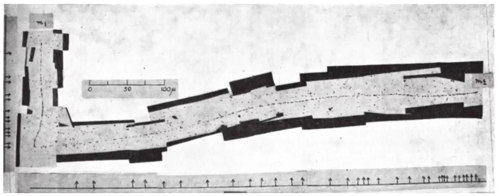
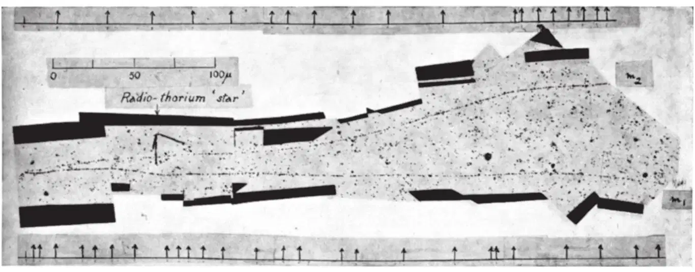
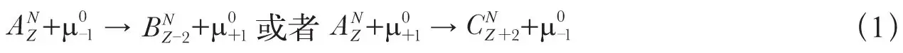
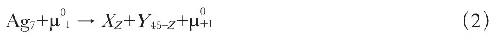
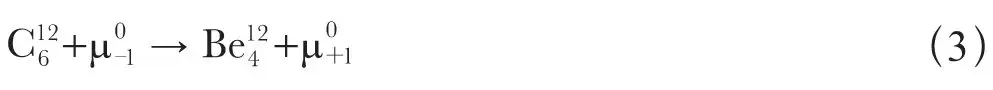
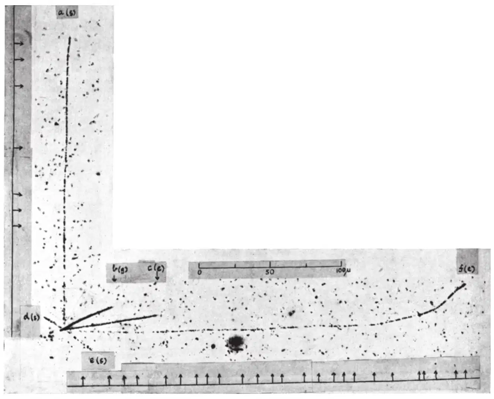
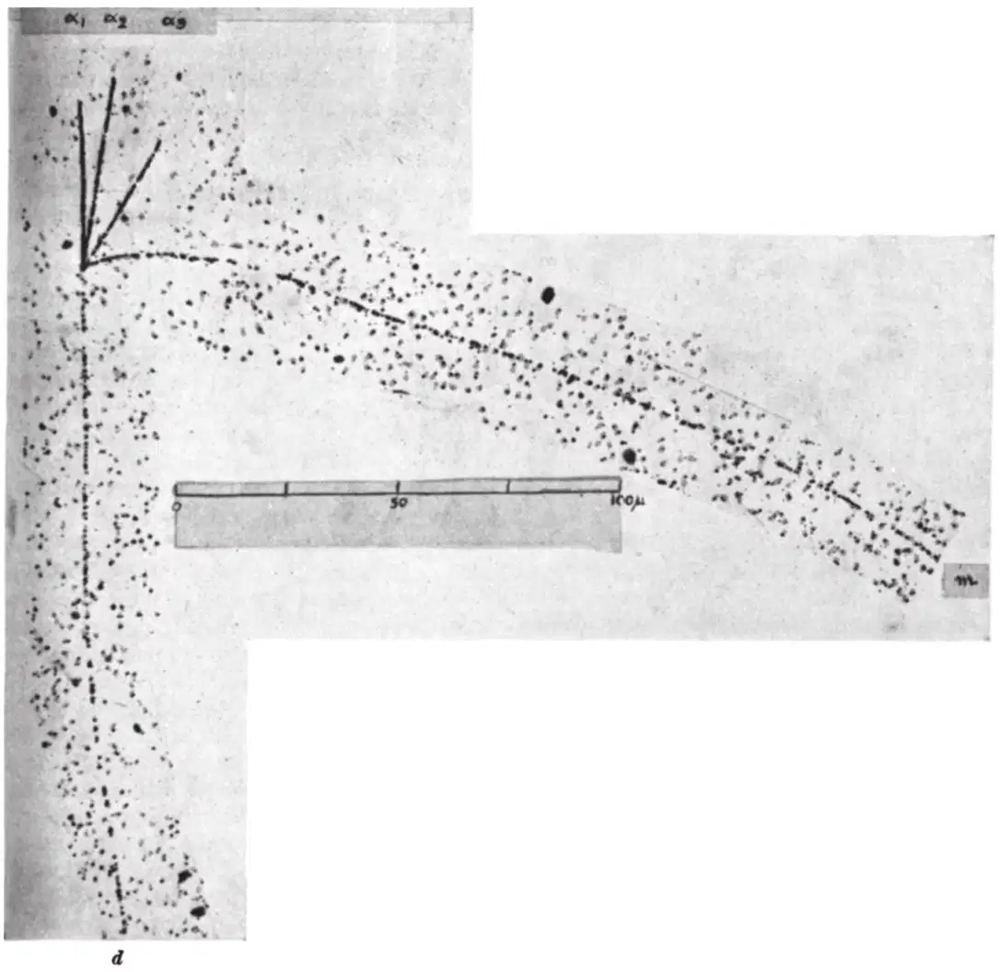
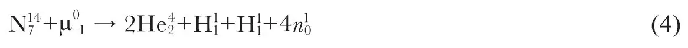

英文
英文拉特斯等
编者按
布里斯托尔大学的塞萨尔·拉特斯及其同事们在这篇文章中报告说，近期宇宙射线的实验结果表明存在迄今未知的粒子。他们发现一些质量比质子小的粒子可以引起核嬗变，并且在此过程中会发射出一些重粒子，他们称其为介子。介子这一专有名词是指任意一个质量介于电子和质子之间的粒子，这已得到公认。拉特斯及其同事们在照相底片上不寻常的粒子径迹中观测到了介子，同时这些照相底片还显示出这些介子有时会衰变为次级介子。随后人们将初级介子确定为正负π介子，几年后在实验室中生成了这些粒子。 英文
近期，我们利用照相法进行的研究[1,2]显示，作为高纬度处宇宙辐射的组分，小质量的带电慢粒子可以进入核并引起核嬗变同时发射出重粒子。对于任何质量介于质子和电子之间的粒子，用“介子”一词来表示都是合适的。通过连续的实验我们发现了有关介子的实验证据，它们在射程末端产生了次级介子。与此同时，我们还观测到了嬗变的核发射出慢介子的嬗变过程。这些过程的某些特性虽然还有待阐明，但是由于其实验结果似乎与发展一套令人满意的核力介子理论这样的重大问题有密切关系，我们将介绍以下的实验内容。 英文
在鉴别介子的径迹时我们应用了颗粒计数法。假设一种粒子的电荷量为|e|，如果我们的假设是正确的，那么当该粒子的射程末端终止于乳胶内时，颗粒计数法从原理上[3]允许我们测定该粒子的质量。我们定义径迹的“颗粒密度”为单位径迹长度中的颗粒数。知道了对于乳胶的射程–能量曲线[4]，我们就可以观测快质子的径迹，以测定描述径迹的颗粒密度与粒子能量损失率间关系的标定曲线。利用这条曲线，所观测到的沿着介子径迹的颗粒分布能够使我们推导出乳胶中粒子的总能量损失。利用粒子被带走的能量以及观测到的粒子射程可以对粒子的质量进行测量。 英文
在测试实验中，对受粒子辐射后立即显影的照片进行观测，并用上述方法对质子质量进行测定，我们发现上述方法给出了令人满意的结果。各条径迹颗粒计数观测值的误差，只是略大于一条径迹中有限的颗粒数的统计波动对应的误差。然而，正如我们先前所强调的那样，在将这种方法用于被宇宙射线[2]辐射数周的照片时，会产生严重的误差。这些误差主要是由于在粒子穿过照片和照片显影之间的这段时间内发生的潜影衰退。 英文
通过随机地选取来自“星”状的质子，对若干条质子径迹进行颗粒计数，来测定每张照片的标定曲线，我们试图以此顾及潜影衰退。这样一个标定曲线对应于照片中径迹衰退的一个平均值。于是，我们得到改进后同类粒子质量的平均值，对标定曲线的测定中没有用到的那些质子的径迹进行的测试性测量显示，单条径迹的颗粒计数测量值变化很大。不过，根据小角度散射的发生频率而判定其为质子的粒子，由其颗粒计数确定的粒子质量都不会超过2,400 me或小于1,300 me。 英文
在这些情况下，不可能太认真地相信由颗粒计数测定的单个介子质量；因为在目前的实验中我们采用这种方法，仅是为了把介子与质子的径迹区分开来。在观察一张照片时，如果乳胶中粒子的射程超过100微米，有经验的观测者通过观察很快就能学会识别出介子的径迹。然而，只有在颗粒密度和库仑散射的发生频率都与小质量粒子的特征值相对应的情形下，我们才确定这一特别的径迹是由介子产生的。尽管采取了上述的防范措施，我们仍然考虑了由于罕见的综合环境条件而将质子径迹误认为是质量小于400 me的介子径迹的可能性。虽然很难给出发生这类误差的概率估计值，但我们相信这个数值是很小的。 英文
次级介子
现在，我们已经对65个介子（射程末端落在乳胶之内）的径迹做了分析，其中40个介子没有产生次级粒子的迹象。剩余的25个介子则产生了次级粒子，其中的15个介子发生嬗变并放射出两个或更多个重粒子，我们观测到剩余的10个介子中每个介子都产生一个单独的次级粒子。而在后面提到的10个事例当中，经我们研究发现其中有4个事例的次级粒子是氢或是更重的核；另4个事例产生的次级粒子的种类还不能确定，最后2个事例产生的则是次级介子。 英文
图1是显微相片中的图像的再现，显示了粒子m1在乳胶中到达了射程的末端。由靠近射程末端处散射点的频繁出现和颗粒密度的快速变化，我们推算出该径迹是由介子产生的。如图1所示，一个次级粒子m2的径迹起始于第一个粒子m1的终点，并且它的径迹也具有小质量粒子径迹的所有特征。图2显示了一个类似的事例。在这两张图的情形中，我们所观测到的图像是由两个不相关的事例产生的两条径迹造成的偶然毗邻的可能性不到十亿分之一。 英文

图1．由罗伯茨夫人观测。用库克45倍“萤石”物镜得到的显微照片。伊尔福载硼C2“核”乳胶。m1是初级介子，m2是次级介子。这张和以下各张照片中的箭头，指示出显微镜观测下方向变化大于2°的点，所有的相片全部未经修改。 英文

图2．由库尔茨小姐观测。库克45倍“萤石”物镜。伊尔福载硼C2“核”乳胶。次级介子m2射离了乳胶。 英文
颗粒计数表明，图1和图2中初始粒子的质量分别为350±80 me和330±50 me；图1中次级粒子的质量为330±50 me，误差限仅相应于与不同径迹中有限数量的颗粒关联的标准偏差。所有这些值都是从照片中衰退的平均值所对应的标定曲线导出的，如果径迹在照射后期产生，该数值将偏高；而如果该径迹在照射早期产生，此数值就会太低。然而，我们可以假定，每个事例中的双组元径迹是迅速接连产生的，因此衰退程度相同。在这类情况下，测量表明，如果初级介子与次级介子之间存在质量差，其量级不可能大于100 me。图2提供的证据并不充分，因为次级粒子穿出了乳胶，但径迹颗粒密度的变化表明，它接近射程末端。由此我们得出结论，次级介子是以几乎相等的能量发射的。 英文
我们试图用初级介子与乳胶中的核相互作用来解释这两个事例，由这种相互作用导致了一个与初级介子质量相同的次级介子的发射。方程（1）表示的任何类型的反应都涉及能量的吸收，

式中A表示乳胶中存在的已知的任何稳定核，但这与观测到的次级介子的能量约为2兆电子伏的事实相矛盾。 英文
第二个过程用以下方程表示

式中X和Y表示电荷数近似相等的两个核，这个反应按能量守恒可能发生，但在两个反冲核的总能量仅为几百万电子伏特量级的条件下发生的可能性很小。因此我们的照片显示的可能是不同质量的介子[5,6,7]的存在。由颗粒计数提供的证据与这个猜想不矛盾。除了知道在乳胶中到达射程末端的一个次级介子并不引发伴随重粒子发射的嬗变外，我们还没有两个介子带电荷符号的直接证据。然而，如果我们假设，嬗变对应于初级介子与轻核的相互作用用方程（3）表示，

那么，根据对铍核的质量估计，2个介子的质量差一定是60 me的量级。 英文
我们所知道的，认为存在不同质量介子的唯一介子理论是施温格模型[8]。该模型设想[9]一个负矢量介子应具有很短的寿命，并应产生具有相同电荷但质量较小的赝标量介子，同时伴随量子辐射。因此，在我们已观测的嬗变类型中测定次级介子是否总释放相同的能量将具有很大意义。如果事实果真如此，我们必定认为，我们正在处理一个比公式（3）所表示的含有特殊核的过程更为基本的过程。作为这类过程的一个例子，如果我们假定在我们实验中出现的次级介子与发射的光子的动量大小相等而方向相反，则在嬗变中释放的总能量是25兆电子伏的量级。 英文
在最近的报道中[10,11]，从对正负介子与轻核和重核的相互作用[12,13]产生的延迟符合的观测结果中已得出基本性结论。该结论认为，一个负介子在其射程终端落入了核的K轨道中。在重核情况下，负介子会被俘获而导致嬗变及发射重粒子。另一方面，在轻核情况下，负介子被认为在被俘获前先发生β衰变，因此像一个正介子一样，可以产生一个延迟符合。由此得出的结论如下，核力要比到目前为止认为的数值小几个数量级。鉴于我们的观测表明了介子衰变的一种新模式，其可能有助于解决这些困难。 英文
由核发射的介子
图3显示了一次嬗变的显微照相图像，其中可以分辨出从同一中心辐射出的6条径迹。图像边缘的字母表示特定的径迹是否穿透乳胶表面s，进入玻璃g，或终止于乳胶e中。径迹a和c的颗粒密度表明，嬗变的发生与照片显影之间的时间间隔足够短，可以避免严重的潜影衰退。 英文

图3．由罗伯茨夫人观测。库克45倍的“萤石”物镜下的显微相片。伊尔福载硼C2“核”乳胶。径迹（b）陡峭地下沉，其表观颗粒密度大于用透视缩小法得到的真值。（b）和（c）可能都是由α粒子产生的。 英文
标记f的径迹由于散射而频繁地改变方向，并且在沿着径迹的运动中，颗粒密度也快速变化。这两个特性一起确定了径迹是由轻粒子产生的，颗粒计数给出的质量估计值是375±70 me[14]。 英文
我们现在已观测到总共1,600个“星”状嬗变，每一个都会从一个核中发射出3个或更多个的带电粒子。其中的170个能量释放大于或等于图4表示的“星”状嬗变中的能量释放，但仅在两个嬗变事例中我们可以判定发射粒子是介子。然而，我们并不能认为，这类嬗变中的介子发射是如这些图中所示的如此罕见。如果发射介子的能量大于5兆电子伏，在我们的实验条件下似乎很难观测到它。帝国理工学院的珀金斯先生已指出，在B1乳胶中，当能量大于2兆电子伏时介子径迹的颗粒密度变得很小，在C2乳胶中更高的能量下我们可以预测到类似的结果。因此，我们的观测与以下观点不矛盾：介子的发射是高能初级粒子核嬗变的共同特性；而目前的事例即粒子的发射速度特别低以至于能够鉴别粒子的种类，是一个罕有的例子。最近描述的介子产生的例子[15]是高能初级粒子由类似过程产生的，其中，由于事例发生时铅片的深度，没有观测到嬗变中发射的一些重质量碎片。 英文

图4．由罗伯茨夫人观测。库克95倍消色差物镜。伊尔福载锂C2“核”乳胶。 英文
图3所示的衰变可能是高能粒子在高层大气中一类具有代表性的常见过程。在当前的例子中，初级粒子的能量至少已达到200兆电子伏，如果其质量小于或等于质子的质量，将不会在乳胶中被记录到。 英文
介子导致的嬗变
基于对嬗变中释放的总能量的观测，通过对带电介子导致的核嬗变的观测，我们提出了测定这些粒子质量的方法[1,2]。尝试采用这个方法时，在鉴别嬗变核的种类和考虑不能被乳胶记录的发射中子问题上我们遇到了困难。图4所示的这类嬗变的一张照片初看起来似乎允许我们做出确定的结论。在照片中，我们可以分辨出四个重粒子的径迹，其中的短径迹α1、α2和α3终止于乳胶中；α1和α2无疑是由α粒子产生的，颗粒计数表明，α3是由质子产生的。因此，观测与以下方程一致

或者与发射若干短程粒子加上一个氘核或氚核的类似方程一致，但是后者的可能性较小。 英文
穿透乳胶的长程粒子径迹d的颗粒计数表明，如果它是由质子产生的，那么粒子的初始能量约为15兆电子伏。如果粒子是氘，那么其能量为30兆电子伏；或者，如果是氚核，则能量为45兆电子伏。无论如何，在嬗变中如果动量守恒，我们可以确定来自发射的中子的最小能量。结果，我们发现初级介子质量的最小值为240 me。颗粒计数测定的值也是240±50 me。 英文
鉴于最近的关于延迟符合的实验结果，并参考以前的结果[12,13]，目前而言，必须以相当保留的态度采纳上述结论。我们可以预测，在任何核中释放出100兆电子伏量级的能量将导致若干个粒子的发射，其中有些可能是中子。因此，认为图4中所示的衰变是氮核嬗变而不是银或溴的嬗变的假设并没有牢固的依据。实际上，延迟符合的实验表明第二种假设具有更大的可能性。当用乳胶片积累足够数量的观测时，可能会从各类核嬗变中观测到的规律中得出更明确的结论。 英文
实验的详细情况即将在别处发表。 英文
（沈乃澂 翻译；朱永生 审稿）